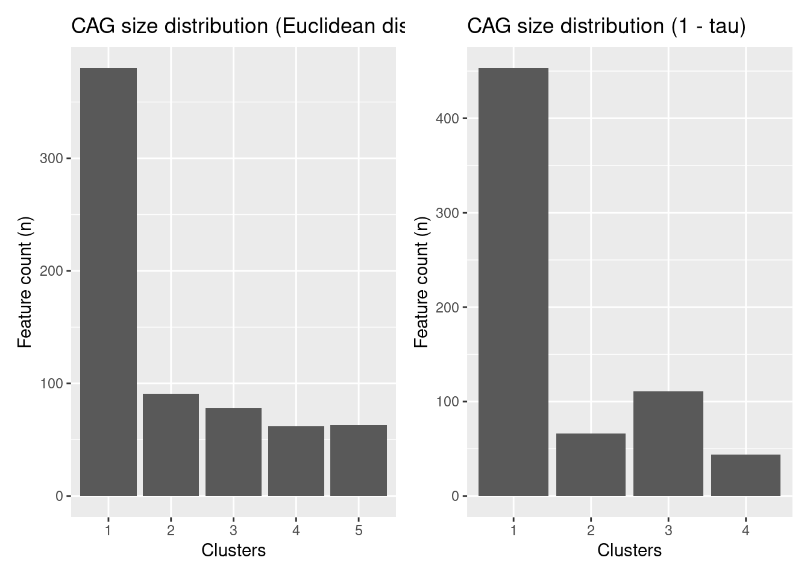

library(mia)
data("GlobalPatterns", package = "mia")
tse <- GlobalPatterns7 Taxonomic Information
Taxonomic information is a key part of analyzing microbiome data and without it, any type of data analysis probably will not make much sense. However, the degree of detail of taxonomic information differs depending on the dataset and annotation data used.
Therefore, the mia package expects a loose assembly of taxonomic information and assumes certain key aspects:
- Taxonomic information is given as character vectors or factors in the
rowDataof aSummarizedExperimentobject. - The columns containing the taxonomic information must be named
domain,kingdom,phylum,class,order,family,genus,speciesor with a capital first letter. - the columns must be given in the order shown above
- column can be omited, but the order must remain
In this chapter, we will refer to co-abundant groups as CAGs, which are clusters of taxa that co-vary across samples.
7.1 Assigning taxonomic information.
There are a number of methods to assign taxonomic information. We like to give a short introduction about the methods available without ranking one over the other. This has to be your choice based on the result for the individual dataset.
7.1.1 dada2
The dada2 package (Callahan et al. 2016) implements the assignTaxonomy function, which takes as input the ASV sequences associated with each row of data and a training dataset. For more information visit the dada2 homepage.
7.1.2 DECIPHER
The DECIPHER package (Wright 2020) implements the IDTAXA algorithm to assign either taxonomic information or function information. For mia only the first option is of interest for now and more information can be found on the DECIPHER website.
7.2 Functions to access taxonomic information
checkTaxonomy checks whether the taxonomic information is usable for mia
checkTaxonomy(tse)[1] TRUESince the rowData can contain other data, taxonomyRanks will return the columns mia assumes to contain the taxonomic information.
taxonomyRanks(tse)[1] "Kingdom" "Phylum" "Class" "Order" "Family" "Genus" "Species"This can then be used to subset the rowData to columns needed.
rowData(tse)[, taxonomyRanks(tse)]DataFrame with 19216 rows and 7 columns
Kingdom Phylum Class Order Family
<character> <character> <character> <character> <character>
549322 Archaea Crenarchaeota Thermoprotei NA NA
522457 Archaea Crenarchaeota Thermoprotei NA NA
951 Archaea Crenarchaeota Thermoprotei Sulfolobales Sulfolobaceae
244423 Archaea Crenarchaeota Sd-NA NA NA
586076 Archaea Crenarchaeota Sd-NA NA NA
... ... ... ... ... ...
278222 Bacteria SR1 NA NA NA
463590 Bacteria SR1 NA NA NA
535321 Bacteria SR1 NA NA NA
200359 Bacteria SR1 NA NA NA
271582 Bacteria SR1 NA NA NA
Genus Species
<character> <character>
549322 NA NA
522457 NA NA
951 Sulfolobus Sulfolobusacidocalda..
244423 NA NA
586076 NA NA
... ... ...
278222 NA NA
463590 NA NA
535321 NA NA
200359 NA NA
271582 NA NAtaxonomyRankEmpty checks for empty values in the given rank and returns a logical vector of length(x).
all(!taxonomyRankEmpty(tse, rank = "Kingdom"))[1] TRUEtable(taxonomyRankEmpty(tse, rank = "Genus"))
FALSE TRUE
8008 11208 table(taxonomyRankEmpty(tse, rank = "Species"))
FALSE TRUE
1413 17803 getTaxonomyLabels is a multi-purpose function, which turns taxonomic information into a character vector of length(x)
head(getTaxonomyLabels(tse))[1] "Class:Thermoprotei" "Class:Thermoprotei_1"
[3] "Species:Sulfolobusacidocaldarius" "Class:Sd-NA"
[5] "Class:Sd-NA_1" "Class:Sd-NA_2" By default, this will use the lowest non-empty information to construct a string with the following scheme level:value. If all levels are the same, this part is omitted, but can be added by setting with_rank = TRUE.
phylum <- !is.na(rowData(tse)$Phylum) &
vapply(data.frame(apply(rowData(tse)[, taxonomyRanks(tse)[3:7]], 1L, is.na)), all, logical(1))
head(getTaxonomyLabels(tse[phylum,]))[1] "Crenarchaeota" "Crenarchaeota_1" "Crenarchaeota_2" "Actinobacteria"
[5] "Actinobacteria_1" "Spirochaetes" head(getTaxonomyLabels(tse[phylum,], with_rank = TRUE))[1] "Phylum:Crenarchaeota" "Phylum:Crenarchaeota_1"
[3] "Phylum:Crenarchaeota_2" "Phylum:Actinobacteria"
[5] "Phylum:Actinobacteria_1" "Phylum:Spirochaetes" By default the return value of getTaxonomyLabels contains only unique elements by passing it through make.unique. This step can be omitted by setting make_unique = FALSE.
head(getTaxonomyLabels(tse[phylum,], with_rank = TRUE, make_unique = FALSE))[1] "Phylum:Crenarchaeota" "Phylum:Crenarchaeota" "Phylum:Crenarchaeota"
[4] "Phylum:Actinobacteria" "Phylum:Actinobacteria" "Phylum:Spirochaetes" To apply the loop resolving function resolveLoop from the TreeSummarizedExperiment package (Huang 2020) within getTaxonomyLabels, set resolve_loops = TRUE.
The function getUniqueFeatures gives a list of unique taxa for the specified taxonomic rank.
head(getUniqueFeatures(tse, rank = "Phylum"))[1] "Crenarchaeota" "Euryarchaeota" "Actinobacteria" "Spirochaetes"
[5] "MVP-15" "Proteobacteria"7.2.1 Generate a taxonomic tree on the fly
To create a taxonomic tree, taxonomyTree used the information and returns a phylo object. Duplicate information from the rowData is removed.
taxonomyTree(tse)
Phylogenetic tree with 1645 tips and 1089 internal nodes.
Tip labels:
Species:Cenarchaeumsymbiosum, Species:pIVWA5, Species:CandidatusNitrososphaeragargensis, Species:SCA1145, Species:SCA1170, Species:Sulfolobusacidocaldarius, ...
Node labels:
root:ALL, Kingdom:Archaea, Phylum:Crenarchaeota, Class:C2, Class:Sd-NA, Class:Thaumarchaeota, ...
Rooted; includes branch lengths.tse <- addTaxonomyTree(tse)
tseclass: TreeSummarizedExperiment
dim: 19216 26
metadata(0):
assays(1): counts
rownames(19216): Class:Thermoprotei Class:Thermoprotei ... Phylum:SR1
Phylum:SR1
rowData names(7): Kingdom Phylum ... Genus Species
colnames(26): CL3 CC1 ... Even2 Even3
colData names(7): X.SampleID Primer ... SampleType Description
reducedDimNames(0):
mainExpName: NULL
altExpNames(0):
rowLinks: a LinkDataFrame (19216 rows)
rowTree: 1 phylo tree(s) (1645 leaves)
colLinks: NULL
colTree: NULLThe implementation is based on the toTree function from the TreeSummarizedExperiment package (Huang 2020).
7.3 Data agglomeration
One of the main applications of taxonomic information in regards to count data is to agglomerate count data on taxonomic levels and track the influence of changing conditions through these levels. For this mia contains the mergeFeaturesByRank function. The ideal location to store the agglomerated data is as an alternative experiment.
tse <- transformAssay(tse, assay.type = "counts", method = "relabundance")
altExp(tse, "Family") <- mergeFeaturesByRank(tse, rank = "Family",
agglomerateTree = TRUE)
altExp(tse, "Family")class: TreeSummarizedExperiment
dim: 603 26
metadata(1): agglomerated_by_rank
assays(2): counts relabundance
rownames(603): Class:Thermoprotei Family:Sulfolobaceae ...
Family:Thermodesulfobiaceae Phylum:SR1
rowData names(7): Kingdom Phylum ... Genus Species
colnames(26): CL3 CC1 ... Even2 Even3
colData names(7): X.SampleID Primer ... SampleType Description
reducedDimNames(0):
mainExpName: NULL
altExpNames(0):
rowLinks: a LinkDataFrame (603 rows)
rowTree: 1 phylo tree(s) (496 leaves)
colLinks: NULL
colTree: NULLIf multiple assays (counts and relabundance) exist, both will be agglomerated.
assayNames(tse)[1] "counts" "relabundance"assayNames(altExp(tse, "Family"))[1] "counts" "relabundance"assay(altExp(tse, "Family"), "relabundance")[1:5, 1:7] CL3 CC1 SV1 M31Fcsw M11Fcsw M31Plmr M11Plmr
Class:Thermoprotei 0.0000000 0.000e+00 0 0 0 0 0.000e+00
Family:Sulfolobaceae 0.0000000 0.000e+00 0 0 0 0 2.305e-06
Class:Sd-NA 0.0000000 0.000e+00 0 0 0 0 0.000e+00
Order:NRP-J 0.0001991 2.070e-04 0 0 0 0 6.914e-06
Family:SAGMA-X 0.0000000 6.165e-06 0 0 0 0 0.000e+00assay(altExp(tse, "Family"), "counts")[1:5, 1:7] CL3 CC1 SV1 M31Fcsw M11Fcsw M31Plmr M11Plmr
Class:Thermoprotei 0 0 0 0 0 0 0
Family:Sulfolobaceae 0 0 0 0 0 0 1
Class:Sd-NA 0 0 0 0 0 0 0
Order:NRP-J 172 235 0 0 0 0 3
Family:SAGMA-X 0 7 0 0 0 0 0altExpNames now consists of Family level data. This can be extended to use any taxonomic level listed in mia::taxonomyRanks(tse).
Rare taxa can also be aggregated into a single group “Other” instead of filtering them out. A suitable function for this is mergeFeaturesByPrevalence. The number of rare taxa is higher on the species level, which causes the need for data agglomeration by prevalence.
altExp(tse, "Species_byPrevalence") <- mergeFeaturesByPrevalence(tse,
rank = "Species",
other_label = "Other",
prevalence = 5 / 100,
detection = 1 / 100,
as_relative = T)
altExp(tse, "Species_byPrevalence")class: TreeSummarizedExperiment
dim: 92 26
metadata(2): agglomerated_by_rank agglomerated_by_rank
assays(2): counts relabundance
rownames(92): pIVWA5 SCA1145 ... Desulfitobacteriumhafniense Other
rowData names(7): Kingdom Phylum ... Genus Species
colnames(26): CL3 CC1 ... Even2 Even3
colData names(7): X.SampleID Primer ... SampleType Description
reducedDimNames(0):
mainExpName: NULL
altExpNames(0):
rowLinks: NULL
rowTree: NULL
colLinks: NULL
colTree: NULLassay(altExp(tse, "Species_byPrevalence"), "relabundance")[88:92, 1:7] CL3 CC1 SV1 M31Fcsw M11Fcsw
Streptococcusthermophilus 5.787e-06 2.290e-05 1.290e-05 6.032e-04 1.122e-04
Mitsuokellamultacida 8.101e-06 7.046e-06 1.147e-05 6.479e-07 9.632e-07
Veillonellaparvula 1.736e-05 1.673e-05 1.720e-05 7.645e-05 1.589e-05
Desulfitobacteriumhafniense 1.620e-05 1.585e-05 8.602e-06 1.296e-06 9.632e-07
Other 8.622e-03 6.787e-03 4.325e-02 2.763e-02 2.682e-03
M31Plmr M11Plmr
Streptococcusthermophilus 1.225e-02 0.002478
Mitsuokellamultacida 2.782e-06 0.000000
Veillonellaparvula 2.075e-02 0.001143
Desulfitobacteriumhafniense 0.000e+00 0.000000
Other 7.077e-02 0.070752# Saving the tse for later
tseGlobalPatterns <- tse7.3.1 Taxa clustering
Another way to agglomerate the data is to cluster the taxa. To do so, we usually start by doing a compositionality aware transformation such as CLR, followed by the application of a standard clustering method.
Here is an example that does a CLR transformation followed by the hierarchical clustering algorithm.
First, we import the library bluster that simplifies the clustering.
library(bluster)Then we do the CLR transform followed by the clustering. We will cluster with two different distances: the euclidean distance and the kendall distance.
# Get the data
data("peerj13075", package = "mia")
tse <- peerj13075
# The result of the CLR transform is stored in the assay clr
tse <- transformAssay(tse, method = "clr", pseudocount = 1)
tse <- transformAssay(tse, assay.type = "clr", method = "z",
MARGIN = "features")
# Cluster (with euclidean distance) on the features of the z assay
tse <- cluster(tse,
assay.type = "z",
clust.col = "hclustEuclidean",
MARGIN = "features",
HclustParam(dist.fun = stats::dist, method = "ward.D2"))
# Declare the Kendall dissimilarity computation function
kendall_dissimilarity <- function(x) {
as.dist(1 - cor(t(x), method = "kendall"))
}
# Cluster (with Kendall dissimilarity) on the features of the z assay
tse <- cluster(tse,
assay.type = "z",
clust.col = "hclustKendall",
MARGIN = "features",
HclustParam(dist.fun = kendall_dissimilarity, method = "ward.D2"))Let us store the resulting cluster indices in the rowData column specified with the clust.col parameter.
# Checking the clusters
clusters_euclidean <- rowData(tse)$hclustEuclidean
head(clusters_euclidean, 10) OTU1 OTU2 OTU7 OTU9 OTU10 OTU12 OTU14 OTU15 OTU18 OTU19
1 2 1 1 1 1 3 4 3 2
Levels: 1 2 3 4 5clusters_kendall <- rowData(tse)$hclustKendall
head(clusters_kendall, 10) OTU1 OTU2 OTU7 OTU9 OTU10 OTU12 OTU14 OTU15 OTU18 OTU19
1 2 1 3 3 1 3 1 1 3
Levels: 1 2 3 4To better visualize the results and the distribution of the clusters, we can plot the histogram of the clusters.
library(ggplot2)
library(patchwork) # TO arrange several plots as a grid
plot1 <- ggplot(as.data.frame(rowData(tse)), aes(x = clusters_euclidean)) +
geom_bar() +
labs(title = "CAG size distribution (Euclidean distance)",
x = "Clusters", y = "Feature count (n)")
plot2 <- ggplot(as.data.frame(rowData(tse)), aes(x = clusters_kendall)) +
geom_bar() +
labs(title = "CAG size distribution (1 - tau)",
x = "Clusters", y = "Feature count (n)")
plot1 + plot2 + plot_layout(ncol = 2)
It’s also possible to merge the rows by cluster.
# Aggregate clusters as a sum of each cluster values
tse_merged <- mergeFeatures(tse, clusters_euclidean)
tse_mergedclass: TreeSummarizedExperiment
dim: 5 58
metadata(0):
assays(3): counts clr z
rownames(5): 1 2 3 4 5
rowData names(8): kingdom phylum ... hclustEuclidean hclustKendall
colnames(58): ID1 ID2 ... ID57 ID58
colData names(5): Sample Geographical_location Gender Age Diet
reducedDimNames(0):
mainExpName: NULL
altExpNames(0):
rowLinks: NULL
rowTree: NULL
colLinks: NULL
colTree: NULLWe can note that it worked as planned since there were 5 clusters and there are now 5 rows.
7.4 Data transformation
Data transformations are common in microbiome analysis. Examples include the logarithmic transformation, calculation of relative abundances (percentages), and compositionality-aware transformations such as the centered log-ratio transformation (clr).
In mia package, transformations are applied to abundance data. The transformed abundance table is stored back to ‘assays’. mia includes transformation function (‘transformAssay()’) which applies sample-wise or column-wise transformation when MARGIN = ‘samples’, feature-wise or row-wise transformation when MARGIN = ‘features’.
For a complete list of available transformations and parameters, see function help.
tse <- tseGlobalPatterns
tse <- transformAssay(tse, assay.type = "counts", method = "relabundance", pseudocount = 1)
tse <- transformAssay(x = tse, assay.type = "relabundance", method = "clr",
pseudocount = 1, name = "clr")
head(assay(tse, "clr")) CL3 CC1 SV1 M31Fcsw
Class:Thermoprotei -5.078e-05 -5.105e-05 -5.055e-05 -4.975e-05
Class:Thermoprotei -5.078e-05 -5.105e-05 -5.055e-05 -4.975e-05
Species:Sulfolobusacidocaldarius -5.078e-05 -5.105e-05 -5.055e-05 -4.975e-05
Class:Sd-NA -5.078e-05 -5.105e-05 -5.055e-05 -4.975e-05
Class:Sd-NA -5.078e-05 -5.105e-05 -5.055e-05 -4.975e-05
Class:Sd-NA -5.078e-05 -5.105e-05 -5.055e-05 -4.975e-05
M11Fcsw M31Plmr M11Plmr F21Plmr
Class:Thermoprotei -4.947e-05 -4.931e-05 -4.879e-05 -4.671e-05
Class:Thermoprotei -4.947e-05 -4.931e-05 -4.879e-05 -4.671e-05
Species:Sulfolobusacidocaldarius -4.947e-05 -4.931e-05 -4.658e-05 -4.671e-05
Class:Sd-NA -4.947e-05 -4.931e-05 -4.879e-05 -4.671e-05
Class:Sd-NA -4.947e-05 -4.931e-05 -4.879e-05 -4.671e-05
Class:Sd-NA -4.947e-05 -4.931e-05 -4.879e-05 -4.671e-05
M31Tong M11Tong LMEpi24M SLEpi20M
Class:Thermoprotei -4.846e-05 -4.257e-05 -4.756e-05 -4.837e-05
Class:Thermoprotei -4.846e-05 -4.257e-05 -4.756e-05 -4.918e-05
Species:Sulfolobusacidocaldarius -4.846e-05 -4.257e-05 -4.756e-05 -4.918e-05
Class:Sd-NA -4.846e-05 -4.257e-05 -4.756e-05 -4.918e-05
Class:Sd-NA -4.846e-05 -4.257e-05 -4.756e-05 -4.918e-05
Class:Sd-NA -4.846e-05 -4.257e-05 -4.756e-05 -4.918e-05
AQC1cm AQC4cm AQC7cm NP2
Class:Thermoprotei -2.385e-05 -4.438e-06 2.787e-05 -4.731e-05
Class:Thermoprotei -4.660e-05 -4.568e-05 -4.428e-05 -4.915e-05
Species:Sulfolobusacidocaldarius -4.660e-05 -4.652e-05 -4.777e-05 -4.915e-05
Class:Sd-NA -4.660e-05 -3.726e-05 -3.090e-05 -4.915e-05
Class:Sd-NA -4.660e-05 -4.568e-05 -4.719e-05 -4.915e-05
Class:Sd-NA -4.660e-05 -4.610e-05 -4.603e-05 -4.915e-05
NP3 NP5 TRRsed1 TRRsed2
Class:Thermoprotei -5.068e-05 -5.083e-05 -3.909e-05 -4.927e-05
Class:Thermoprotei -5.068e-05 -5.083e-05 -3.909e-05 -4.927e-05
Species:Sulfolobusacidocaldarius -5.068e-05 -5.083e-05 -3.909e-05 -4.927e-05
Class:Sd-NA -5.068e-05 -5.083e-05 -3.909e-05 -4.927e-05
Class:Sd-NA -5.068e-05 -5.083e-05 -3.909e-05 -4.927e-05
Class:Sd-NA -5.068e-05 -5.083e-05 -3.909e-05 -4.927e-05
TRRsed3 TS28 TS29 Even1
Class:Thermoprotei -4.829e-05 -5.016e-05 -4.934e-05 -5.046e-05
Class:Thermoprotei -4.829e-05 -5.016e-05 -4.934e-05 -5.046e-05
Species:Sulfolobusacidocaldarius -4.829e-05 -5.016e-05 -4.934e-05 -5.046e-05
Class:Sd-NA -4.829e-05 -5.016e-05 -4.934e-05 -5.046e-05
Class:Sd-NA -4.829e-05 -5.016e-05 -4.934e-05 -5.046e-05
Class:Sd-NA -4.829e-05 -5.016e-05 -4.934e-05 -5.046e-05
Even2 Even3
Class:Thermoprotei -5.017e-05 -5.034e-05
Class:Thermoprotei -5.017e-05 -5.034e-05
Species:Sulfolobusacidocaldarius -5.017e-05 -5.034e-05
Class:Sd-NA -5.017e-05 -5.034e-05
Class:Sd-NA -5.017e-05 -5.034e-05
Class:Sd-NA -5.017e-05 -5.034e-05- In ‘pa’ transformation, abundance table is converted to present/absent table.
tse <- transformAssay(tse, method = "pa")
head(assay(tse, "pa")) CL3 CC1 SV1 M31Fcsw M11Fcsw M31Plmr M11Plmr
Class:Thermoprotei 0 0 0 0 0 0 0
Class:Thermoprotei 0 0 0 0 0 0 0
Species:Sulfolobusacidocaldarius 0 0 0 0 0 0 1
Class:Sd-NA 0 0 0 0 0 0 0
Class:Sd-NA 0 0 0 0 0 0 0
Class:Sd-NA 0 0 0 0 0 0 0
F21Plmr M31Tong M11Tong LMEpi24M SLEpi20M
Class:Thermoprotei 0 0 0 0 1
Class:Thermoprotei 0 0 0 0 0
Species:Sulfolobusacidocaldarius 0 0 0 0 0
Class:Sd-NA 0 0 0 0 0
Class:Sd-NA 0 0 0 0 0
Class:Sd-NA 0 0 0 0 0
AQC1cm AQC4cm AQC7cm NP2 NP3 NP5 TRRsed1
Class:Thermoprotei 1 1 1 1 0 0 0
Class:Thermoprotei 0 1 1 0 0 0 0
Species:Sulfolobusacidocaldarius 0 0 0 0 0 0 0
Class:Sd-NA 0 1 1 0 0 0 0
Class:Sd-NA 0 1 1 0 0 0 0
Class:Sd-NA 0 1 1 0 0 0 0
TRRsed2 TRRsed3 TS28 TS29 Even1 Even2 Even3
Class:Thermoprotei 0 0 0 0 0 0 0
Class:Thermoprotei 0 0 0 0 0 0 0
Species:Sulfolobusacidocaldarius 0 0 0 0 0 0 0
Class:Sd-NA 0 0 0 0 0 0 0
Class:Sd-NA 0 0 0 0 0 0 0
Class:Sd-NA 0 0 0 0 0 0 0# list of abundance tables that assays slot contains
assays(tse)List of length 4
names(4): counts relabundance clr pa
Callahan, Benjamin J, Paul J McMurdie, Michael J Rosen, Andrew W Han, Amy Jo A Johnson, and Susan P Holmes. 2016. “DADA2: High-Resolution Sample Inference from Illumina Amplicon Data.” Nature Methods 13: 581–83. https://doi.org/10.1038/nmeth.3869.
Huang, Ruizhu. 2020. TreeSummarizedExperiment: A S4 Class for Data with Tree Structures.
Wright, Erik. 2020. DECIPHER: Tools for Curating, Analyzing, and Manipulating Biological Sequences.